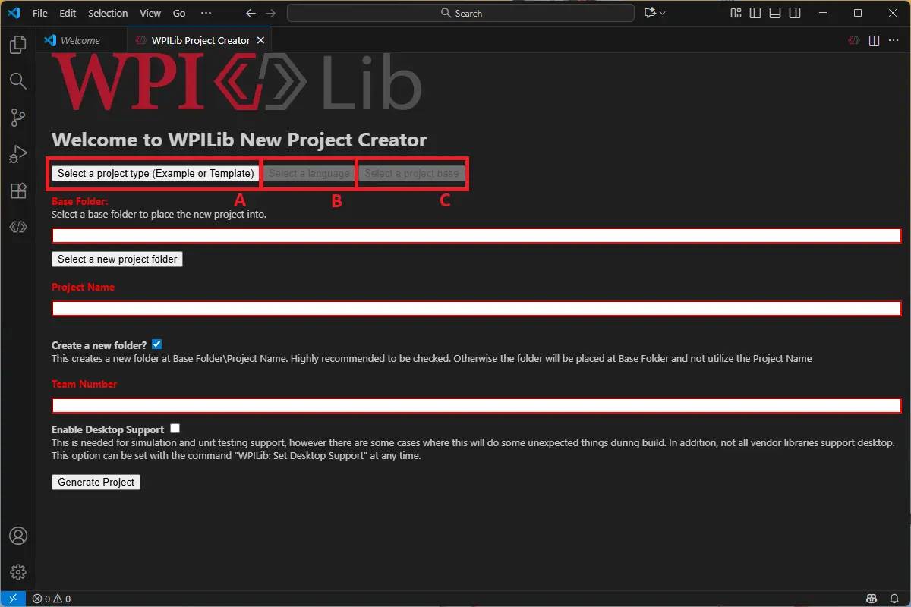
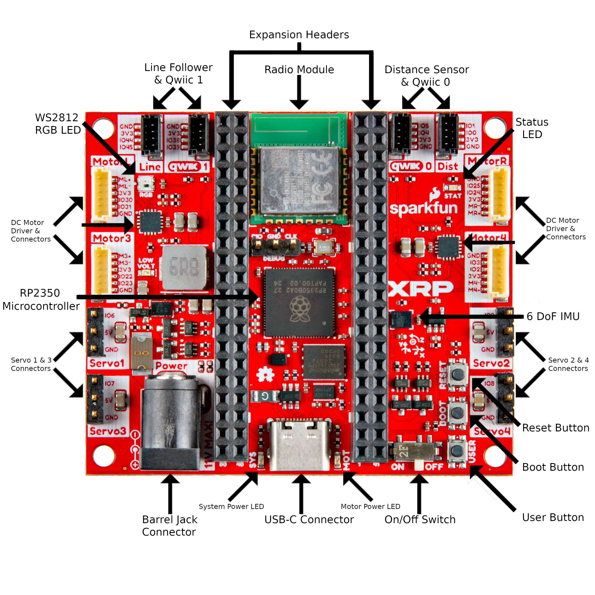

"I just want to make the robot drive. Why are we reading files?"
Fair. But if you don't know what these files do, you'll spend the rest of the season randomly editing things hoping something works. This takes 20 minutes. Debugging blind takes hours.
Every BearBots project starts from the same WPILib template. Create one now so you can see exactly what the generator produces.
1. Click the WPILib hexagon logo in the top-right corner of VS Code
2. Type WPILib: Create a new project and press Enter
3. Project type: Template → Language: Java → Template: Command Robot Skeleton (Advanced)
A box and select TemplateB box and select javaC box and select XRP - Timed Robot
4. Folder: choose somewhere outside your BearBots project (e.g. D:\FRC\XRP-Template)
5. Project name: XRP-Template · Team number: 6964
6. Check the box next to Enable Desktop Support
7. Click Generate Project.
8. VS Code prompts to open the new project — open it in a new window.
Don't deploy this to the XRP. Don't save work here. It's a read-only reference.
Git is version control — it tracks every change you make to code, lets you undo mistakes, and lets a whole team work on the same project without overwriting each other. You'll use it every session.
1. Open the VS Code terminal: Ctrl+` (backtick) or Terminal → New Terminal
2. Type exactly:
git --version
3. If you see something like git version 2.54.0.windows.1 — Git is installed. Skip to the clone step below.
If you see 'git' is not recognized — follow the install steps for your situation.
1. Go to git-scm.com/download/win — download starts automatically
2. Run the installer. Accept all defaults — don't change any options.
3. When finished, close and reopen VS Code — the terminal needs to restart to see Git
4. Run git --version again to confirm it works
Now clone the BearBots project. This downloads the entire repository to your machine.
1. In the VS Code terminal, create a new folder for FRC files. Run:
mkdir C:\FRC
2. Clone the repo into that folder:
cd C:\FRC git clone https://github.com/Helijason/bearbots-xrp-code
3. Wait for the download to finish. You'll see Cloning into 'bearbots-xrp-code'... and then a done message.
4. Open the cloned folder: File → Open Folder → C:\FRC\bearbots-xrp-code
This must be a fresh folder separate from Lesson 1. The cd C:\FRC command puts you in the right place — don't clone inside an existing project folder.
Git needs to know who you are before it can save any snapshots. Run these two commands in the VS Code terminal:
git config --global user.name "Your Name" git config --global user.email "you@example.com"
You only do this once per machine. Use your real name and the email tied to your GitHub account.
Git tracks changes in snapshots called commits. Think of each commit as a save point you can return to. Here are the three commands you'll use every session.
Stage your changes — tell Git which files to include in the snapshot:
git add .
The . means "everything changed in this folder." You can also stage a single file: git add Robot.java
Commit — save the snapshot with a message describing what you did:
git commit -m "Add pilot name logging to Robot.java"
The message is for you and your teammates. Be specific — "fixed stuff" is useless at 11pm the night before competition.
Pull — get the latest updates from the shared repository:
git pull
Run this at the start of every session so you're working from the latest code.
| git config --global user.name "Name" | Set your name — one time per machine |
| git config --global user.email "e@mail" | Set your email — one time per machine |
| git --version | Confirm Git is installed |
| git clone <url> | Download a repository for the first time |
| git pull | Get latest updates — run at the start of every session |
| git add . | Stage all changed files |
| git commit -m "msg" | Save a snapshot with a description |
| git push | Upload commits to GitHub (covered later) |
Look at the XRP-TEMPLATE project first. Open the Explorer panel (Ctrl+Shift+E) and expand src/main/java/frc/robot/. You should see exactly these files:
The entry point. Starts the robot.
The lifecycle manager. Controls what happens in each robot mode.
The switchboard. Creates subsystems and wires up buttons.
A place for numbers that don't change. Starts nearly empty.
The build recipe. Tells Java what libraries to include.
Placeholder files. Gone in the BearBots project.
Now open both projects side by side. The BearBots project isn't XRP-TEMPLATE — we made deliberate changes before you got here. Each card below shows one difference, why it was a problem, and why the change fixes it.
Find each change in the BearBots project before reading the card. The file name is labelled on every card. Spot the difference first — then click to see the reasoning.
public class Robot extends TimedRobot
public class Robot extends LoggedRobot
TimedRobot has no logging hooks. Your robot breaks at competition on Saturday. You have zero recorded data to understand what happened. You go home guessing.
LoggedRobot extends TimedRobot — every lifecycle method works identically. The difference is that LoggedRobot wraps each 20ms loop cycle with AdvantageKit data capture. Every input the robot reads, every output it commands, timestamped and saved. You can replay the entire match in simulation later and see exactly what happened, when it happened.
All the same methods still exist: robotPeriodic(), teleopInit(), etc. Nothing breaks. You just gain observability.
public Robot() {
m_chooser.setDefaultOption(
"Default Auto", kDefaultAuto);
m_chooser.addOption(
"My Auto", kCustomAuto);
SmartDashboard.putData(
"Auto choices", m_chooser);
}
public Robot() {
Logger.recordMetadata(
"ProjectName", "XRP-AKit");
Logger.addDataReceiver(
new NT4Publisher());
Logger.start();
robotContainer =
new RobotContainer();
}
AdvantageKit is installed but never told to start. Every @AutoLog annotation silently does nothing. No error, no warning — just no data, ever.
Logger.start() initializes all data sinks and starts the capture loop. It must happen before new RobotContainer() — subsystems are created inside RobotContainer, and we need logging active before their first periodic() call so no data is missed from boot.
Note: this is Logger.start() — not Logger.getInstance().start(). AdvantageKit 3.x changed the API. The old pattern still appears in many tutorials online. Ours is correct for 2025+.
// no Logger config // no data receivers
Logger.recordMetadata( "ProjectName", "XRP-AKit"); Logger.addDataReceiver( new NT4Publisher()); Logger.start();
Without a data receiver, AdvantageKit has nowhere to send data. NT4Publisher streams everything to NetworkTables so AdvantageScope can see it live during simulation.
Logger.addDataReceiver(new NT4Publisher()) tells AdvantageKit to publish all logged values to NetworkTables. That's what AdvantageScope connects to. Without it, Logger.start() runs but nothing appears in AdvantageScope.
On a real robot you'd also add a file logger to save data for replay. For the XRP simulator, NT4Publisher is all we need.
// Constants.java // does not exist
public static final
RobotMode currentMode =
RobotMode.SIM;
public enum RobotMode {
REAL, SIM, REPLAY
}
No way to tell the codebase which environment it's running in. Teams hardcode for real hardware and lose the ability to simulate, or hardcode for sim and can't deploy without changes.
One field controls the entire IO layer. Set currentMode = RobotMode.SIM and the codebase loads simulated hardware. Set it to RobotMode.REAL and it talks to real motors. Set it to RobotMode.REPLAY and it reads from a saved log file.
On a roboRIO, the code auto-detects REAL using RobotBase.isReal() so you never accidentally deploy sim code. In VS Code, you set SIM manually. This is covered in when we go deep on the IO pattern.
// Constants.java // does not exist
public static final
class DriveHardware {
public static final int
kLeftMotorChannel = 1;
public static final int
kRightMotorChannel = 0;
...
}
Magic numbers scattered across subsystem files. Motor channel hardcoded as 0 or 1 in multiple places. Wiring changes on build day. You hunt through files, miss one, and the robot drives in circles at your first match.
Inner classes group related constants together without needing separate files. Constants.DriveHardware.kLeftMotorChannel is unambiguous about what it is and where to find it. Change it once, everything that references it updates automatically.
This is a team design decision — there's no single right answer. BearBots uses inner classes as a middle ground. As the codebase grows, teams often split into separate files: ArmConstants.java, FieldConstants.java, VisionConstants.java. Start here, split when it gets crowded. The pattern is more important than the file count.
dependencies {
annotationProcessor
wpi.java.deps
.wpilibAnnotations()
implementation
wpi.java.deps.wpilib()
// no AdvantageKit
}
dependencies {
// ... same as template
def akitJson =
new JsonSlurper()
.parseText(...)
annotationProcessor
"org.littletonrobotics
.akit:akit-autolog:
$akitJson.version"
}
AdvantageKit classes are referenced in code but unknown to the build system. First build fails with "cannot find symbol" on every Logger and @AutoLog reference. Nothing compiles.
You never edit this block by hand. Running WPILib: Manage Vendor Libraries → Install new libraries (online) and pasting the AdvantageKit URL writes this automatically. The vendor dep tells Gradle where to download the AdvantageKit JAR and how to include it in the build.
If you ever add a new vendor library mid-season (PathPlanner, Phoenix 6, REVLib), this is the file that changes. Check it when builds break mysteriously.
The files don't run independently — they start each other in a fixed order every time the robot powers on.
💡 Click any box in the diagram for more information.
extends TimedRobot to extends LoggedRobot. All lifecycle methods work the same. You just get logging for free.
Thread.sleep(), heavy file I/O, or slow network calls inside periodic methods. Keep the loop lean.
autonomousInit() schedules one top-level command that kicks everything off. The subsystems, the IO layer, the scheduler — all identical.
Without looking: if a command doesn't run when you press a button, which file do you check first? Write it down before moving to Part 3.
Check RobotContainer first — button bindings live there. If the binding exists and still nothing happens, check that CommandScheduler.getInstance().run() is in robotPeriodic(). No scheduler call = no commands, ever, no matter how perfect your bindings are.
Before you ever touch the XRP, you need to be comfortable in the simulator. This is where you'll spend most of your development time. Real hardware is for verifying — simulation is for building.
1. Click the WPILib hexagon logo in the top right corner of VS Code
2. Type WPILib: Simulate Robot Code → Enter
3. Dialog asks which extensions to load — check halsim_gui → OK
4. Wait for build. The Robot Simulation window opens automatically.
Check the System Console panel first. Errors print there. "Nothing is happening" and "there is an error" look identical from the outside.
Enable/disable the robot. Switch between Teleop, Auto, and Test modes.
Forgetting to enable is the #1 sim confusion.
Map keyboard or real controller inputs to robot joystick slots.
Drag Keyboard 0 to Joystick[0].
Shows print statements, errors, and stack traces from your robot code.
Always check here first when something goes wrong.
Shows all values published to NetworkTables in real time.
AdvantageKit data appears as "AdvantageKit/…"
1. Open AdvantageScope
2. File → Connect to Simulator (or in Windows Ctrl+Shift+K)
3. Left panel populates — look for the AdvantageKit/ folder
4. Connect before enabling the robot so you don't miss the first seconds of data
1. In the Simulation GUI find the Joysticks panel
2. Drag Keyboard 0 to the Joystick[0] slot
3. Robot State panel → select Teleoperated → click Enable
4. Click back on the Simulation GUI window — keyboard input only works when it's focused
When we move to physical hardware, these are the port-to-subsystem mappings for the BearBots XRP. (WPILib XRP hardware reference) More information can be found by searching for the SparkFun XRP robot. SparkFun XRP Controller Hardware Overview

| Device | Port | Subsystem | Direction |
|---|---|---|---|
| Left drive motor | XRPMotor 0 | DriveSubsystem | Output |
| Right drive motor | XRPMotor 1 | DriveSubsystem | Output |
| Left encoder | DIO 4 / 5 | DriveSubsystem | Input |
| Right encoder | DIO 6 / 7 | DriveSubsystem | Input |
| Gyro | XRPGyro | DriveSubsystem | Input |
| Arm servo | XRPServo 4 → Servo 1 | ArmSubsystem | Output |
Per the WPILib docs: the right motor spins backward when positive output is applied. The corresponding motor controller must be inverted in code. This is already handled in DriveIOXRP.java.
Launch the simulator. Connect AdvantageScope. Enable in Teleop. Drive with the keyboard. Watch at least one value move in AdvantageScope. Don't move on until you've done this.
The simulator is running. Now learn to read what the robot is actually doing — without looking at the robot.
Everyone sets up the same two graphs, then we race to see whose data looks the most interesting.
1. In AdvantageScope's left panel, expand the Drive/ folder
2. Drag LeftPositionMeters to the graph area
3. Drag RightPositionMeters onto the same graph tab
4. Enable in Teleop and start driving
Before each maneuver, the class predicts what the graph will look like. Closest prediction wins candy.
Maneuver 1: drive straight forward for 2 seconds.
Maneuver 2: spin in place for 2 seconds.
Maneuver 3: instructor's mystery pattern — describe it only after everyone draws their prediction.
Instructor drives. You watch only the encoder graphs — no watching the 3D model.
In your own words: how would you tell from encoder data alone whether the robot drove straight or turned? No code — just the concept.
Three hands-on activities. Work at your own pace — all three have extensions if you finish early.
Pairs. Each round: drag the tiles to the correct targets. No peeking at code.
Every constant follows the same three-word recipe: public static final.
public static final double kSpeedLimit = 0.8; public static final int kLeftMotorPort = 0; public static final String kProjectName = "BearBots";
Why all three?
public — any file in the project can read itstatic — belongs to the class itself, not an object; no new DriveConstants() neededfinal — can never be reassigned after startup; the value is lockedprivate instead of public — the constant becomes invisible to other files. Defeats the purpose.static — you'd need a new DriveConstants() object to read it. Never what you want.final — the value can be overwritten at runtime. It becomes a variable, not a constant.Each subsystem gets its own constants file. Start with the files you need and add more as the project grows:
// DriveConstants.java public final class DriveConstants { public static final double kSpeedLimit = 0.8; public static final double kDeadband = 0.1; public static final int kLeftMotorPort = 0; public static final int kRightMotorPort = 1; } // ArmConstants.java public final class ArmConstants { public static final double kMaxAngleDeg = 120.0; public static final double kStowedAngleDeg = 5.0; } // AutoConstants.java public final class AutoConstants { public static final double kDriveTimeSeconds = 2.0; public static final double kTurnTimeSeconds = 1.3; }
Add an import at the top of the file, then use the constant by name.
// At the top of Drive.java — import the constants file you need import frc.robot.DriveConstants; // Then use it anywhere in the file xaxisSpeed = MathUtil.clamp(xaxisSpeed, -1.0, 1.0) * DriveConstants.kSpeedLimit;
No import? Use the fully-qualified name instead:
xaxisSpeed = MathUtil.clamp(xaxisSpeed, -1.0, 1.0) * DriveConstants.kSpeedLimit;
Type a constant class name that hasn't been imported yet — VS Code underlines it red. Hover it and press Ctrl+. then choose Add import. VS Code writes the import line for you.
Six magic numbers are hiding in the project — hardcoded directly in subsystem files instead of their appropriate constants file. Find each one, move it to the right place, and check it off.
Build after each hunt. If you break a reference, you'll know exactly which change caused it instead of hunting through all six at once.
0.8 in Drive.java0.1 hardcoded in RobotContainer.java120 (degrees) hardcoded in Arm.java0.1885 (wheel circumference in meters) hardcoded in DriveConstants.java1.3 and 2.0 (seconds) hardcoded in an AutonomousTime"Robot" used as a Logger key, hardcoded in Robot.javaBuild the project. It should still compile. If it doesn't, you moved something but didn't update the reference. Find the broken reference and fix it.
Make the robot log who's driving it. One line of code.
1. In Constants.java, add: public static final String PILOT_NAME = "Your Name";
2. In Robot.java inside robotPeriodic(), add: Logger.recordOutput("Pilot", Constants.PILOT_NAME);
3. Run the simulator. Open AdvantageScope. Find Pilot in the log tree.
Four robots. Four different files. Each one compiles and launches — and then something goes wrong. Your job: read the symptom, find the bug, fix it. Each bug lives in a different file.
Before you click anything — read the symptom and write down your guess. How did you do?
The simulator starts. You enable in Teleop. You drive. The robot moves — but AdvantageScope shows no log data at all. The AdvantageKit/ folder never appears.
TimedRobot doesn't know about AdvantageKit. The logger attaches its hooks to LoggedRobot's loop cycle. Without that, no inputs are captured — you get a driving robot with zero observability.
Robot drives forward when you push the joystick left. Pushing forward makes the robot spin. Controls feel 90 degrees rotated.
On a standard joystick: Y axis = forward/backward, X axis = left/right. Forward input should come from getLeftY(), turn from getLeftX(). They're swapped here.
The slightest joystick movement sends the robot to full speed instantly. There's no proportional control — it's either stopped or full throttle.
Motor output values range from -1.0 (full reverse) to 1.0 (full forward). Any value multiplied by 100.0 immediately saturates the clamp. The motor sees 1.0 the instant the joystick moves at all.
Driving "forward" makes the robot spin in place. The left encoder value goes negative while the right goes positive. Both motors are running but fighting each other.
On a differential drive, the left and right motors are mechanically mirrored. To make both wheels push forward, one motor must be inverted. Here only rightMotor is inverted — left runs backwards relative to right, producing a spin instead of straight motion.
Match each bug symptom from the lab to the file where it lives. Get all four right to unlock Part 8.
Complete the Symptom Match in Part 7 to unlock this section.
Or ask your instructor for the unlock code.
You built a project, read the files, ran the simulator, logged data, and fixed four bugs. Now meet the game you'll be programming your robot to play. Note that there will be differences from the published game manual.
Two robots, one field, three types of game elements. Your robot has 2.5 minutes to score as many points as possible.
Autonomous: 30 seconds — robot acts on its own
Teleoperated: 2 minutes — you drive
Format: 1v1 round-robin — every student competes against every other student
| Action | Points |
|---|---|
| Rubble in Low Zone | 1 |
| Rubble in High Goal | 3 |
| Ping pong ball in Low Zone | 2 |
| Ping pong ball in High Goal | 5 |
| Large ball on High Pedestal | 10 |
| Robot parked in Low Zone | 3 |
No element holding limits. No robot inspection. No penalties for any robot contact. Focus on scoring, not avoiding fouls.
Instructor: run this activity if time permits. It sets up Lesson 3's subsystem introduction.
With a partner, discuss each question for 2 minutes. Be specific — describe exactly what the robot physically does.